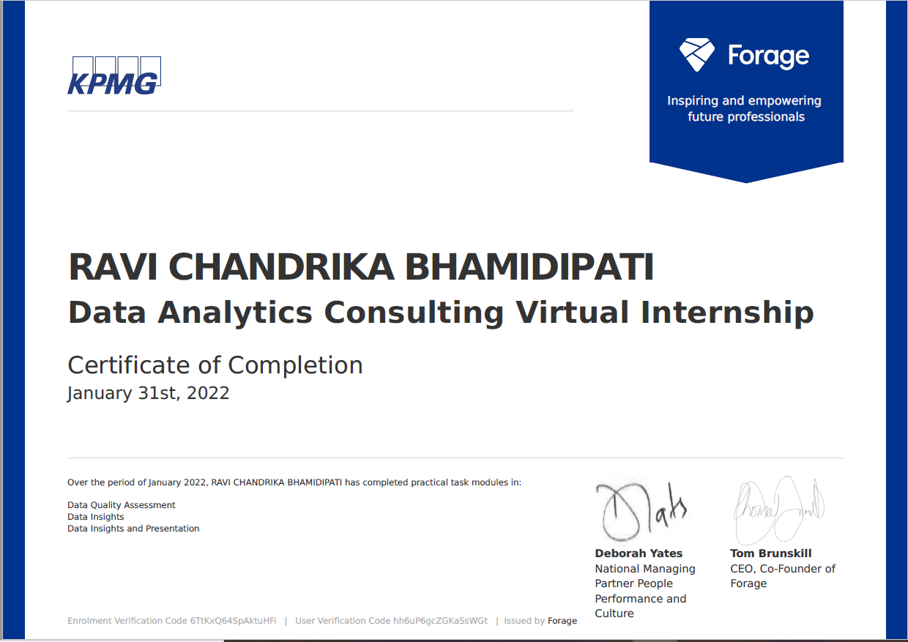
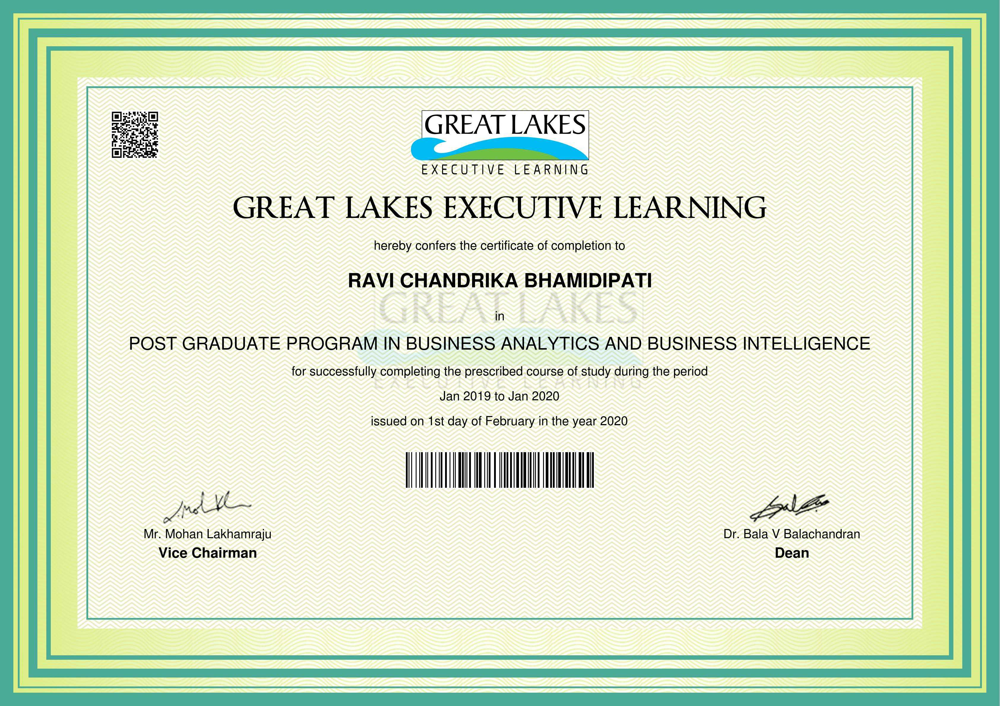
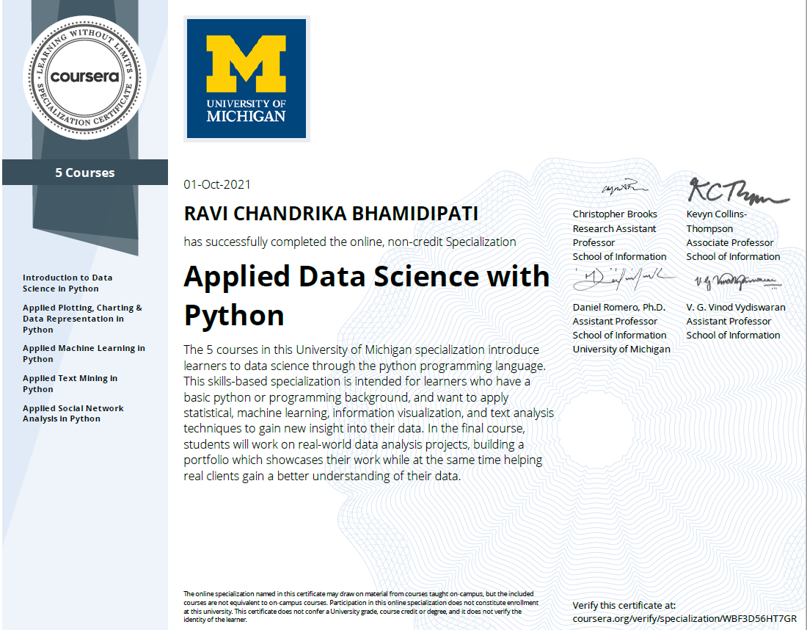
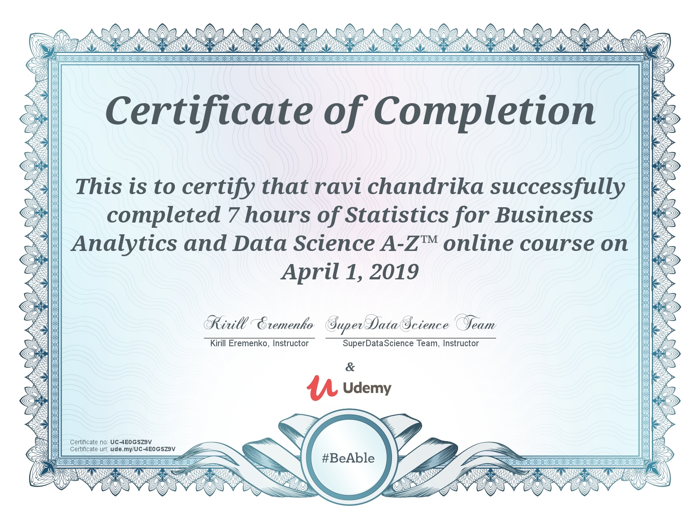

Relevant Coursework
“The capacity to learn is a gift; The ability to learn is a skill; The willingness to learn is a choice.”
― Brian Herbert
KPMG Virtual Internship (The Forage)
I have completed KPMG
Data Analytics Virtual Internship. This gives an insight into the work being done at KPMG.
The following three tasks were given to complete the internship. I used Excel, python and Tableau to finishes these tasks.
Data Quality Assessment: Assessment of data quality and completeness in preparation for analysis
Data Insights: Targeting high value customers based on customer demographics and attributes.
Data Insights and Presentation: Using visualisations to present insights.
The focus was on
Data Quality Analysis, Analytical Dashboard Creation, Data Analytics, Customer Segmentation, Data Driven Presentations, Data Dashboards, Data Visualisations, Presentations
{kind=link}
Post Graduate Program in Business Analytics and Business Intelligence (Great Lakes)
I have completed a Post Graduate Program in
Business Analytics and Business Intelligence designed by Great Lakes,India and UT Austin, Texas.
Through this PG program, I have advanced my skill set in inferential and descriptive statistics, exploratory data analytics, visualization (TABLEAU)
and developed a hands working understanding of Machine Learning algorithms (using R & PYTHON).
My projects included an end to end execution starting with problem scope definition to model performance evaluation
and insight generation for business development.
{kind=link}
{kind=link}
Applied-Data-Science-with-Python-Specialization by University of Michigan (Coursera)
There are 5 courses in this Applied-Data-Science-with-Python-Specialization by University of Michigan.
Here I was introduced to data science through the python programming language.
This is a skills-based specialization where I was able to apply statistical, machine learning, information visualization, text analysis, and social network analysis techniques
through popular python toolkits such as pandas, matplotlib, scikit-learn, nltk, and networkx to gain insight to a given data.
{kind=link}
The Ultimate MySQL Bootcamp: Go from SQL Beginner to Expert (Udemy)
Through this course I have learnt the ins and outs of SQL syntax, analyse data using Aggregate Functions, run complex queries using MySQL logical operators and string functions.
Write all the common SQL joins, working with dates and times, build a clone database structure of a photo sharing social network.
Some of the main modules are to build a web app using MySQL and NodeJS, design and implement complex database schemas. Using Faker to generate fake data sets.
{kind=link}
Statistics for Business Analytics and Data Science A-Z™ (Udemy)
This course is an introduction to Statistics by Kirill Eremenko
A course for understanding fundamentals and application of statistics in business problem solving.
{kind=link}